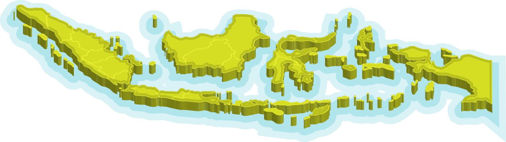

Inilah Indonesia

Negeri dengan seribu sumber daya.
Kekayaan alam yang berlimpah menjadi tumpuan harapan bangsa.

Lebih dari seperempat milliar manusia tinggal di Indonesia.
Menempati posisi ke-4 penduduk terbanyak setelah India, China, dan Amerika Serikat.
Juta Jiwa

Juta Jiwa

Juta Jiwa
Juta Jiwa

Ya, jika dahulu kita mengenal China dengan populasi terbesarnya di dunia, kini posisi tersebut telah diambil alih oleh negara yang luasnya hanya sepertiganya.

Berdasarkan World Population Propects 2022 yang dirilis oleh PBB pada akhir 2022, penduduk India dinyatakan membalap China pada 2023.
Dunia mengalami perubahan, imbas dari kebijakan, teknologi, serta transformasi pola pikir manusia.
Struktur penduduk di dunia diproyeksikan akan bergeser akibat perubahan tingkat kelahiran dan kematian bayi. Terus merembet mempengaruhi Umur Harapan Hidup seseorang.
Piramida Penduduk Indonesia
(ribu orang)


Lalu,
BAGAIMANA DENGAN INDONESIA ?



Berkaca dari tren angka fertilitas selama 5 dekade terakhir,
penduduk usia balita di Indonesia diproyeksikan akan terus menurun.
Di sisi lain, penduduk lansia diproyeksikan akan naik pesat.
Genap di usia satu abad,
1 dari 5 penduduk negeri ini adalah lansia.
Indonesia dinyatakan telah memasuki era penuaan penduduk (ageing population), salah satu fenomena yang tidak dapat diabaikan. Penuaan penduduk ditandai dengan proporsi penduduk lanjut usia (lansia) yang mencapai 10 persen. Pada era ini, penduduk lansia akan mengalami penambahan yang pesat, baik dari sisi jumlah maupun proporsi.